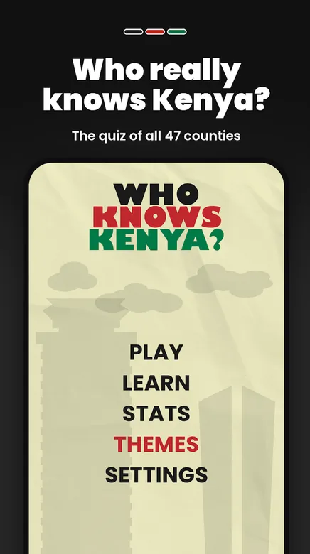
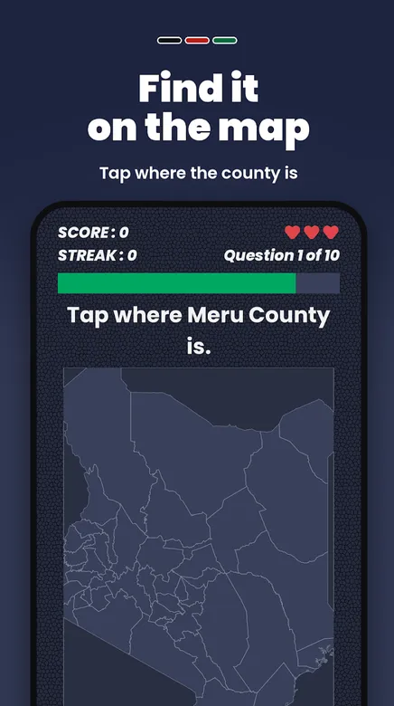
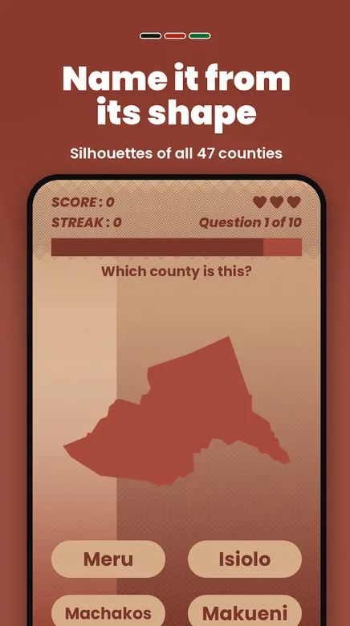
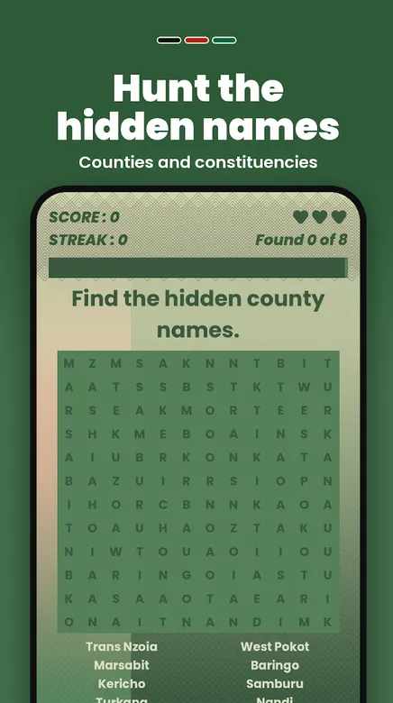

Who Knows: Kenya
by OHB Studio · developer Bradley Omondi · Android
A quiz game about Kenya’s 47 counties and 290 constituencies. Work your way from 001 Mombasa to 047 Nairobi, then take on harder rounds. Learn mode has facts and maps for every county.
- Number to county
- County to number
- Name it from its shape
- Which county are these constituencies in?
- Tap the county on the map
- Word search: counties
- Word search: constituencies
It’s made in Kenya, about Kenya, and turns social studies into a game. Two players can share one phone, or friends can play together over the same Wi-Fi. That makes it great for family game nights, classrooms and revision.
B³ safe app check
- Age ratingRated 3+
- Chat with strangersNo chat listed
- MultiplayerSame phone, or same Wi-Fi only
- Daily leaderboardUse a nickname, not a real name
- AdsNone listed
- In-app purchasesKsh 50 – 1,000 per item
- Data collected and sharedDevice IDs, approximate location, app activity, diagnostics
- Encrypted in transitYes
- Delete your dataNo way to request deletion
- Download size185 MB, so use Wi-Fi
Source: the Google Play listing (version 0.1.1, updated 14 October 2026), its Data safety section and store screenshots, checked 20 November 2026.
Excellent Kenyan learning content that works offline. Before handing it to a child, turn on purchase approval in Google Play (Settings → Authentication → Require authentication for purchases). The app also shares device IDs and approximate location with other companies, so younger children should play with a grown-up.







Screenshots are hidden in low-data mode.